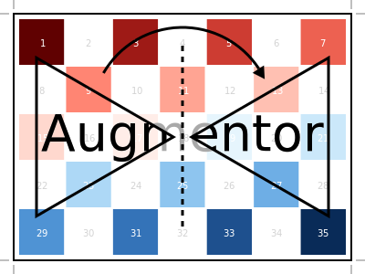

High-level Interface
Integrating Augmentor into an existing project should in general not require any major changes to your code. In most cases it should break down to the three basic steps outlined below. We will spend the rest of this document investigating these in more detail.
Import Augmentor into the namespace of your program.
using AugmentorDefine a (stochastic) image processing pipeline by chaining the desired operations using
|>and*.julia> pl = FlipX() * FlipY() |> Zoom(0.9:0.1:1.2) |> CropSize(64,64) 3-step Augmentor.ImmutablePipeline: 1.) Either: (50%) Flip the X axis. (50%) Flip the Y axis. 2.) Zoom by I ∈ {0.9×0.9, 1.0×1.0, 1.1×1.1, 1.2×1.2} 3.) Crop a 64×64 window around the centerApply the pipeline to the existing image or set of images.
img_processed = augment(img_original, pl)
Depending on the complexity of your problem, you may want to iterate between 2. and 3. to identify an appropriate pipeline. Take a look at the Elastic Distortions Tutorial for an example of how such an iterative process could look like.
Defining a Pipeline
In Augmentor, a (stochastic) image-processing pipeline can be understood as a sequence of operations, for which the parameters can (but need not) be random variables. What that essentially means is that the user explicitly specifies which image operation to perform in what order. A complete list of available operations can be found at Supported Operations.
To start off with a simple example, let us assume that we want to first rotate our image(s) counter-clockwise by 14°, then crop them down to the biggest possible square, and lastly resize the image(s) to a fixed size of 64 by 64 pixel. Such a pipeline would be defined as follows:
julia> pl = Rotate(14) |> CropRatio(1) |> Resize(64,64)
3-step Augmentor.ImmutablePipeline:
1.) Rotate 14 degree
2.) Crop to 1:1 aspect ratio
3.) Resize to 64×64Notice that in the example above there is no room for randomness. In other words, the same input image would always result in the same output image given that pipeline. If we wish for more variation we can do so by using a vector as our parameters, instead of a single number.
In this subsection we will focus only on how to define a pipeline, without actually thinking too much about how to apply that pipeline to an actual image. The later will be the main topic of the rest of this document.
Say we wish to adapt our pipeline such that the rotation is a little more random. More specifically, lets say we want our image to be rotated by either -10°, -5°, 5°, 10°, or not at all. Other than that change we will leave the rest of the pipeline as is.
julia> pl = Rotate([-10,-5,0,5,10]) |> CropRatio(1) |> Resize(64,64)
3-step Augmentor.ImmutablePipeline:
1.) Rotate by θ ∈ [-10, -5, 0, 5, 10] degree
2.) Crop to 1:1 aspect ratio
3.) Resize to 64×64Variation in the parameters is only one of the two main ways to introduce randomness to our pipeline. Additionally, one can specify that an operation should be sampled randomly from a chosen set of operations . This can be accomplished using a utility operation called Either, which has its own convenience syntax.
As an example, let us assume we wish to first either mirror our image(s) horizontally, or vertically, or not at all, and then crop it down to a size of 100 by 100 pixel around the image's center. We can specify the "either" using the * operator.
julia> pl = FlipX() * FlipY() * NoOp() |> CropSize(100,100)
2-step Augmentor.ImmutablePipeline:
1.) Either: (33%) Flip the X axis. (33%) Flip the Y axis. (33%) No operation.
2.) Crop a 100×100 window around the centerIt is also possible to specify the odds of for such an "either". For example we may want the NoOp to be twice as likely as either of the mirroring options.
julia> pl = (1=>FlipX()) * (1=>FlipY()) * (2=>NoOp()) |> CropSize(100,100)
2-step Augmentor.ImmutablePipeline:
1.) Either: (25%) Flip the X axis. (25%) Flip the Y axis. (50%) No operation.
2.) Crop a 100×100 window around the centerNow that we know how to define a pipeline, let us think about how to apply it to an image or a set of images.
Loading the Example Image
Augmentor ships with a custom example image, which was specifically designed for visualizing augmentation effects. It can be accessed by calling the function testpattern(). That said, doing so explicitly should rarely be necessary in practice, because most high-level functions will default to using testpattern() if no other image is specified.
Augmentor.testpattern — Function.testpattern() -> Matrix{RGBA{N0f8}}Load and return the provided 300x400 test image.
The returned image was specifically designed to be informative about the effects of the applied augmentation operations. It is thus well suited to prototype an augmentation pipeline, because it makes it easy to see what kind of effects one can achieve with it.
using Augmentor
img = testpattern()
Augmenting an Image
Once a pipeline is constructed it can be applied to an image (i.e. AbstractArray{<:ColorTypes.Colorant}), or even just to an array of numbers (i.e. AbstractArray{<:Number}), using the function augment.
Augmentor.augment — Function.augment([img], pipeline) -> imgaApply the operations of the given pipeline to the image img and return the resulting image imga.
The parameter pipeline can be a Augmentor.Pipeline, a tuple of Augmentor.Operation, or a single Augmentor.Operation.
img = testpattern()
augment(img, FlipX() |> FlipY())
augment(img, (FlipX(), FlipY()))
augment(img, FlipX())If img is omitted, Augmentor will use the augmentation test image provided by the function testpattern as the input image.
augment(FlipX())We also provide a mutating version of augment that writes the output into preallocated memory. While this function avoids allocation, it does have the caveat that the size of the output image must be known beforehand (and thus must not be random).
Augmentor.augment! — Function.augment!(out, img, pipeline) -> outApply the operations of the given pipeline to the image img and write the resulting image into out.
The parameter pipeline can be a Augmentor.Pipeline, a tuple of Augmentor.Operation, or a single Augmentor.Operation.
img = testpattern()
out = similar(img)
augment!(out, img, FlipX() |> FlipY())
augment!(out, img, (FlipX(), FlipY()))
augment!(out, img, FlipX())Augmenting Image Batches
In most machine learning scenarios we will want to process a whole batch of images at once, instead of a single image at a time. For this reason we provide the function augmentbatch!, which also supports multi-threading.
Augmentor.augmentbatch! — Function.augmentbatch!([resource], outs, imgs, pipeline, [obsdim]) -> outsApply the operations of the given pipeline to the images in imgs and write the resulting images into outs.
Both outs and imgs have to contain the same number of images. Each of these two variables can either be in the form of a higher dimensional array, or alternatively in the form of a vector of arrays, for which each vector element denotes an image.
If one (or both) of the two parameters outs and imgs is a higher dimensional array, then the optional parameter obsdim can be used specify which dimension denotes the observations (defaults to ObsDim.Last()),
The parameter pipeline can be a Augmentor.Pipeline, a tuple of Augmentor.Operation, or a single Augmentor.Operation.
The optional first parameter resource can either be CPU1() (default) or CPUThreads(). In the later case the images will be augmented in parallel. For this to make sense make sure that the environment variable JULIA_NUM_THREADS is set to a reasonable number so that Threads.nthreads() is greater than 1.